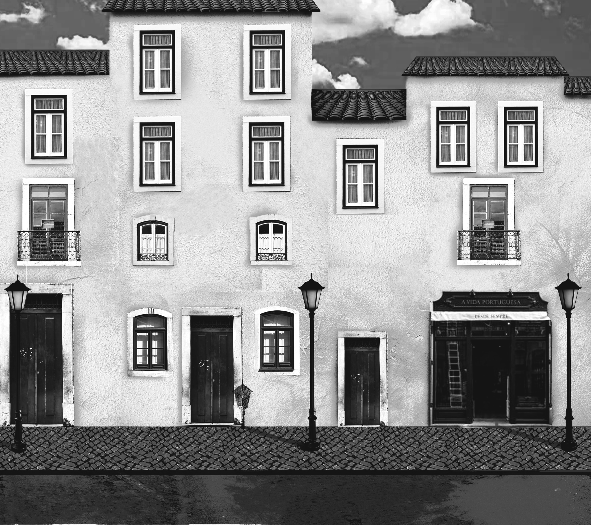
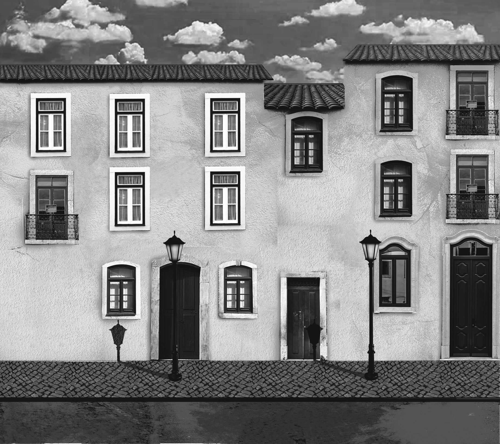
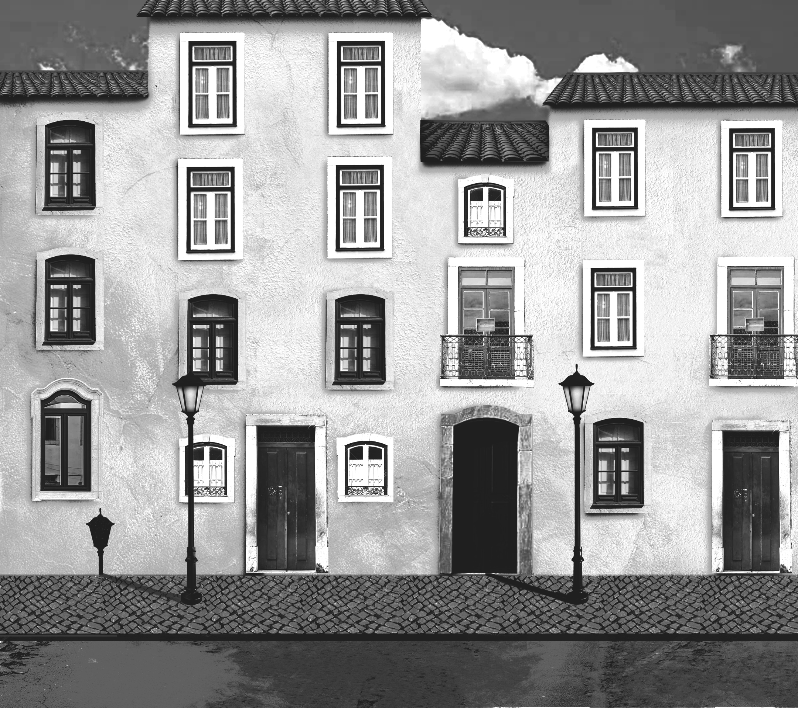
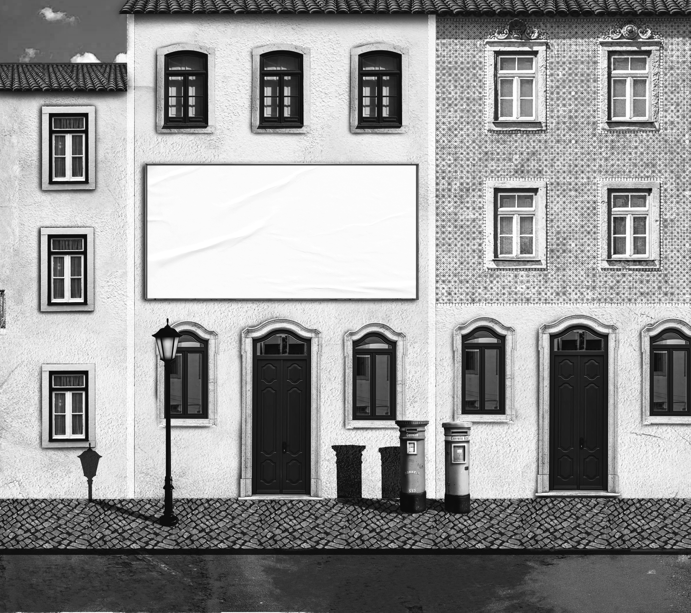
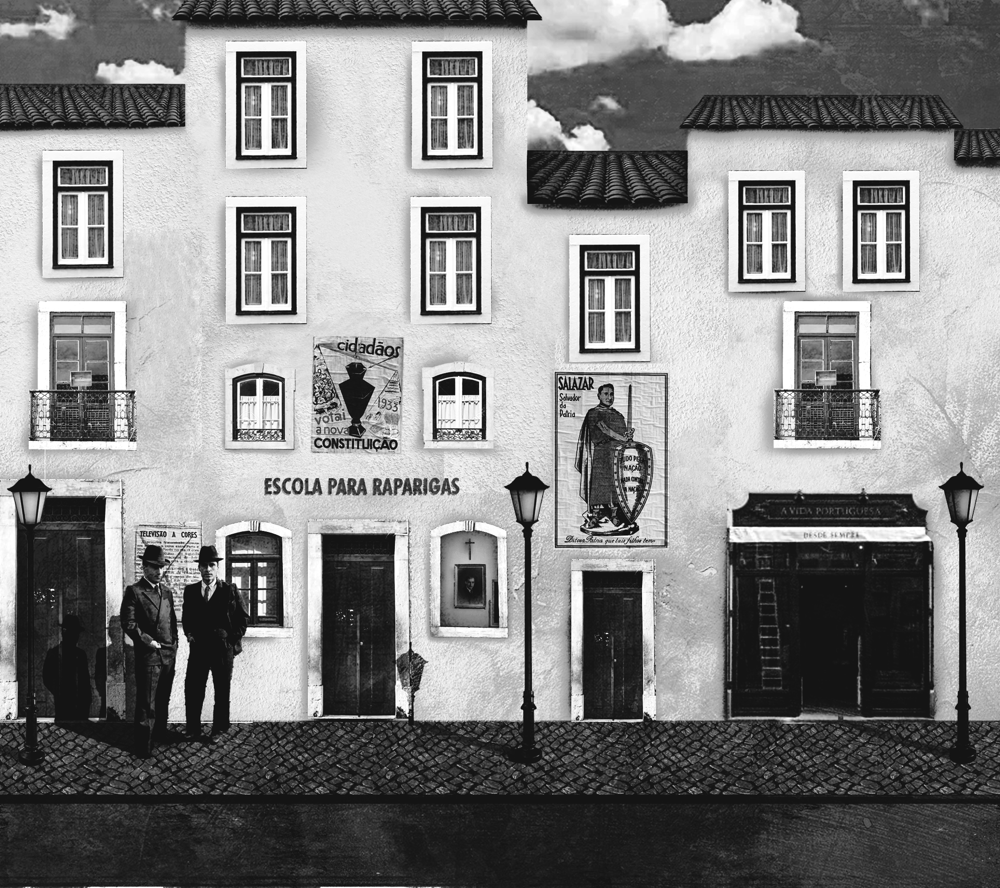
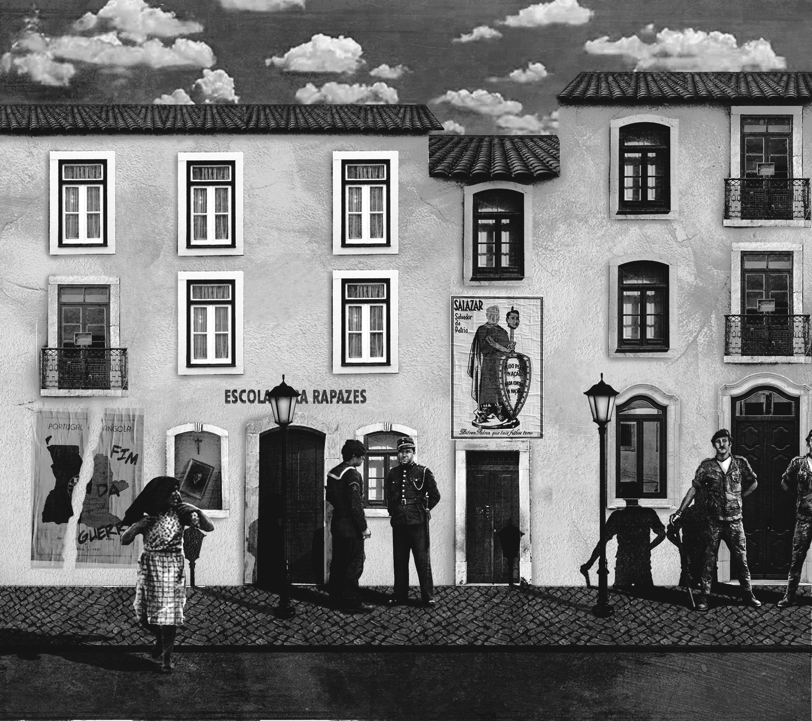
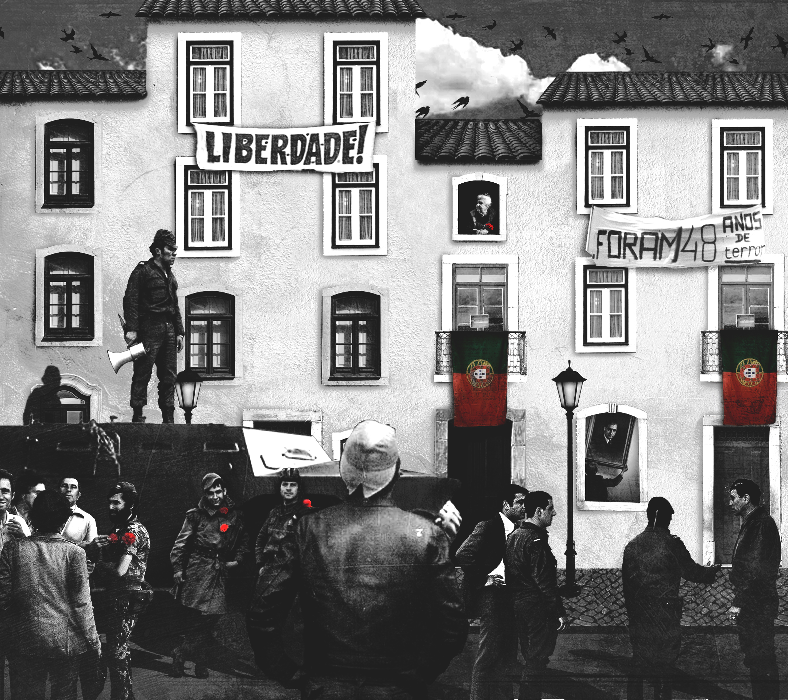
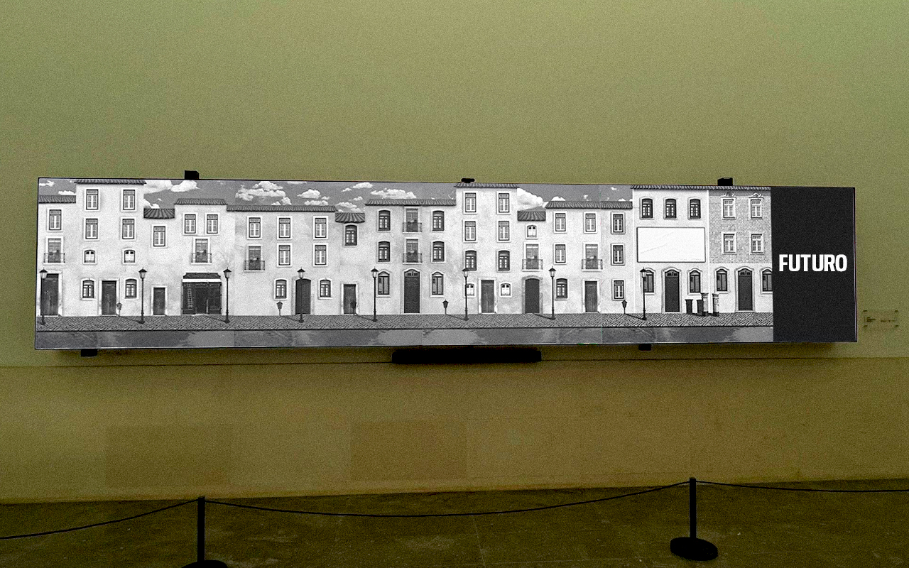

APRIL 25th PROJECT FOR AN INSTALLATION
Project created as part of the Project 4 - Interactive Multimedia course of the Design and Multimedia Degree Program at the University of Coimbra
Project carried out in the third year of university in the second semester in a group of three people. The theme we chose for this project was “50 years of April 25.” During the ideation process, we decided to create an interactive exhibition for FeedNPlay, a set of panels that would construct a chronological journey of the events surrounding the April 25 revolution, from 1933, the year the dictatorship was established in Portugal, through April 25, 1975, to the present day. All of this took place on a street created and designed by us, which stretched across 8 of the 9 screens provided by FeedNPlay. Each set of 2 screens belonged to a specific era, and when a user approached them, the street area changed and transformed, revealing various elements alluding to the year corresponding to each of the 4 zones.

Painel 1

Painel 2

Painel 3

Painel 4

Painel 1 - Interaction

Painel 2 - Interaction

Painel 3 - Interaction

Painel 4 - Interaction
